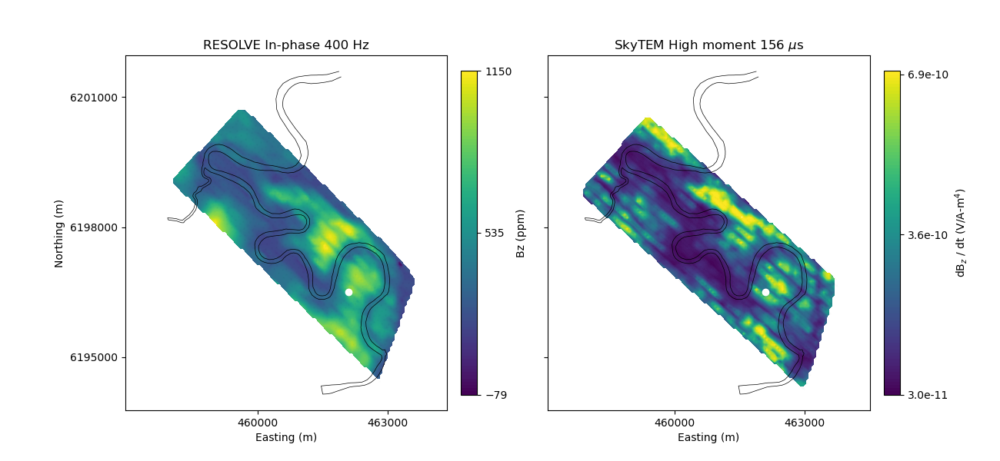
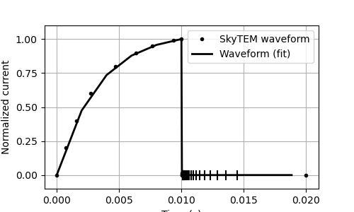
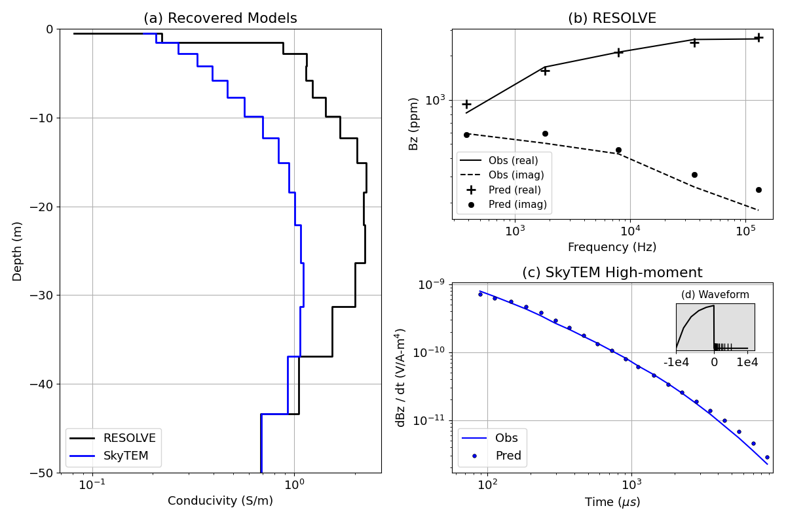

Note
Go to the end to download the full example code
Heagy et al., 2017 1D RESOLVE and SkyTEM Bookpurnong Inversions#
In this example, show 1D inversions of a single sounding from each of the RESOLVE and SkyTEM data sets. The original data can be downloaded from: https://storage.googleapis.com/simpeg/bookpurnong/bookpurnong.tar.gz
The forward simulation is performed on the cylindrically symmetric mesh using
SimPEG.electromagnetics.frequency_domain, and SimPEG.electromagnetics.time_domain
The RESOLVE data are inverted first. This recovered model is then used as a reference model for the SkyTEM inversion
This example is published in
Lindsey J. Heagy, Rowan Cockett, Seogi Kang, Gudni K. Rosenkjaer, Douglas W. Oldenburg, A framework for simulation and inversion in electromagnetics, Computers & Geosciences, Volume 107, 2017, Pages 1-19, ISSN 0098-3004, http://dx.doi.org/10.1016/j.cageo.2017.06.018.
The script and figures are also on figshare: https://doi.org/10.6084/m9.figshare.5107711
This example was updated for SimPEG 0.14.0 on January 31st, 2020 by Joseph Capriotti
- 
- 
- 
Downloading https://storage.googleapis.com/simpeg/bookpurnong/bookpurnong_inversion.tar.gz
saved to: /home/vsts/work/1/s/examples/20-published/bookpurnong_inversion.tar.gz
Download completed!
SimPEG.InvProblem is setting bfgsH0 to the inverse of the eval2Deriv.
***Done using same Solver, and solver_opts as the Simulation3DMagneticFluxDensity problem***
model has any nan: 0
============================ Inexact Gauss Newton ============================
# beta phi_d phi_m f |proj(x-g)-x| LS Comment
-----------------------------------------------------------------------------
x0 has any nan: 0
0 2.00e+00 1.24e+02 0.00e+00 1.24e+02 2.84e+01 0
1 2.00e+00 1.83e+01 2.92e+00 2.42e+01 1.13e+01 0
2 2.00e+00 6.08e+00 1.68e+00 9.44e+00 4.47e+00 0
------------------------- STOP! -------------------------
1 : |fc-fOld| = 0.0000e+00 <= tolF*(1+|f0|) = 1.2510e+01
0 : |xc-x_last| = 2.1957e+00 <= tolX*(1+|x0|) = 1.3820e+00
0 : |proj(x-g)-x| = 4.4665e+00 <= tolG = 1.0000e-01
0 : |proj(x-g)-x| = 4.4665e+00 <= 1e3*eps = 1.0000e-02
0 : maxIter = 5 <= iter = 3
------------------------- DONE! -------------------------
SimPEG.InvProblem is setting bfgsH0 to the inverse of the eval2Deriv.
***Done using same Solver, and solver_opts as the Simulation3DElectricField problem***
model has any nan: 0
============================ Inexact Gauss Newton ============================
# beta phi_d phi_m f |proj(x-g)-x| LS Comment
-----------------------------------------------------------------------------
x0 has any nan: 0
/home/vsts/conda/envs/simpeg-test/lib/python3.8/site-packages/pymatsolver/direct.py:23: PardisoTypeConversionWarning:
Converting csc_matrix matrix to CSR format, will slow down.
/home/vsts/conda/envs/simpeg-test/lib/python3.8/site-packages/pymatsolver/direct.py:73: PardisoTypeConversionWarning:
Converting csc_matrix matrix to CSR format, will slow down.
0 2.00e+01 2.28e+02 2.12e+01 6.53e+02 1.32e+02 0
1 2.00e+01 4.79e+01 2.02e+00 8.83e+01 4.59e+01 0
2 2.00e+01 1.88e+01 1.19e+00 4.27e+01 1.27e+01 0
3 2.00e+01 1.13e+01 1.39e+00 3.90e+01 4.08e+00 0
4 2.00e+01 1.06e+01 1.41e+00 3.87e+01 1.74e+00 0
------------------------- STOP! -------------------------
1 : |fc-fOld| = 0.0000e+00 <= tolF*(1+|f0|) = 6.5401e+01
1 : |xc-x_last| = 1.0883e-01 <= tolX*(1+|x0|) = 1.3820e+00
0 : |proj(x-g)-x| = 1.7387e+00 <= tolG = 1.0000e-01
0 : |proj(x-g)-x| = 1.7387e+00 <= 1e3*eps = 1.0000e-02
1 : maxIter = 5 <= iter = 5
------------------------- DONE! -------------------------
/home/vsts/work/1/s/examples/20-published/plot_booky_1D_time_freq_inv.py:478: UserWarning:
This figure includes Axes that are not compatible with tight_layout, so results might be incorrect.
('/home/vsts/work/1/s/examples/20-published',)
import numpy as np
import h5py
import tarfile
import os
import shutil
import matplotlib
import matplotlib.pyplot as plt
from scipy.constants import mu_0
from pymatsolver import Pardiso as Solver
import discretize
from SimPEG import (
maps,
utils,
data_misfit,
regularization,
optimization,
inversion,
inverse_problem,
directives,
data,
)
from SimPEG.electromagnetics import frequency_domain as FDEM, time_domain as TDEM
def download_and_unzip_data(
url="https://storage.googleapis.com/simpeg/bookpurnong/bookpurnong_inversion.tar.gz",
):
"""
Download the data from the storage bucket, unzip the tar file, return
the directory where the data are
"""
# download the data
downloads = utils.download(url)
# directory where the downloaded files are
directory = downloads.split(".")[0]
# unzip the tarfile
tar = tarfile.open(downloads, "r")
tar.extractall()
tar.close()
return downloads, directory
def run(plotIt=True, saveFig=False, cleanup=True):
"""
Run 1D inversions for a single sounding of the RESOLVE and SkyTEM
bookpurnong data
:param bool plotIt: show the plots?
:param bool saveFig: save the figure
:param bool cleanup: remove the downloaded results
"""
downloads, directory = download_and_unzip_data()
resolve = h5py.File(os.path.sep.join([directory, "booky_resolve.hdf5"]), "r")
skytem = h5py.File(os.path.sep.join([directory, "booky_skytem.hdf5"]), "r")
river_path = resolve["river_path"][()]
# Choose a sounding location to invert
xloc, yloc = 462100.0, 6196500.0
rxind_skytem = np.argmin(
abs(skytem["xy"][:, 0] - xloc) + abs(skytem["xy"][:, 1] - yloc)
)
rxind_resolve = np.argmin(
abs(resolve["xy"][:, 0] - xloc) + abs(resolve["xy"][:, 1] - yloc)
)
# Plot both resolve and skytem data on 2D plane
fig = plt.figure(figsize=(13, 6))
title = ["RESOLVE In-phase 400 Hz", r"SkyTEM High moment 156 $\mu$s"]
ax1 = plt.subplot(121)
ax2 = plt.subplot(122)
axs = [ax1, ax2]
out_re = utils.plot2Ddata(
resolve["xy"],
resolve["data"][:, 0],
ncontour=100,
contourOpts={"cmap": "viridis"},
ax=ax1,
)
vmin, vmax = out_re[0].get_clim()
cb_re = plt.colorbar(
out_re[0], ticks=np.linspace(vmin, vmax, 3), ax=ax1, fraction=0.046, pad=0.04
)
temp_skytem = skytem["data"][:, 5].copy()
temp_skytem[skytem["data"][:, 5] > 7e-10] = 7e-10
out_sky = utils.plot2Ddata(
skytem["xy"][:, :2],
temp_skytem,
ncontour=100,
contourOpts={"cmap": "viridis", "vmax": 7e-10},
ax=ax2,
)
vmin, vmax = out_sky[0].get_clim()
cb_sky = plt.colorbar(
out_sky[0],
ticks=np.linspace(vmin, vmax * 0.99, 3),
ax=ax2,
format="%.1e",
fraction=0.046,
pad=0.04,
)
cb_re.set_label("Bz (ppm)")
cb_sky.set_label("dB$_z$ / dt (V/A-m$^4$)")
for i, ax in enumerate(axs):
xticks = [460000, 463000]
yticks = [6195000, 6198000, 6201000]
ax.set_xticks(xticks)
ax.set_yticks(yticks)
ax.plot(xloc, yloc, "wo")
ax.plot(river_path[:, 0], river_path[:, 1], "k", lw=0.5)
ax.set_aspect("equal")
if i == 1:
ax.plot(skytem["xy"][:, 0], skytem["xy"][:, 1], "k.", alpha=0.02, ms=1)
ax.set_yticklabels([str(" ") for f in yticks])
else:
ax.plot(resolve["xy"][:, 0], resolve["xy"][:, 1], "k.", alpha=0.02, ms=1)
ax.set_yticklabels([str(f) for f in yticks])
ax.set_ylabel("Northing (m)")
ax.set_xlabel("Easting (m)")
ax.set_title(title[i])
ax.axis("equal")
# plt.tight_layout()
if saveFig is True:
fig.savefig("resolve_skytem_data.png", dpi=600)
# ------------------ Mesh ------------------ #
# Step1: Set 2D cylindrical mesh
cs, ncx, npad = 1.0, 10.0, 20
hx = [(cs, ncx), (cs, npad, 1.3)]
npad = 12
temp = np.logspace(np.log10(1.0), np.log10(12.0), 19)
temp_pad = temp[-1] * 1.3 ** np.arange(npad)
hz = np.r_[temp_pad[::-1], temp[::-1], temp, temp_pad]
mesh = discretize.CylindricalMesh([hx, 1, hz], "00C")
active = mesh.cell_centers_z < 0.0
# Step2: Set a SurjectVertical1D mapping
# Note: this sets our inversion model as 1D log conductivity
# below subsurface
active = mesh.cell_centers_z < 0.0
actMap = maps.InjectActiveCells(mesh, active, np.log(1e-8), nC=mesh.shape_cells[2])
mapping = maps.ExpMap(mesh) * maps.SurjectVertical1D(mesh) * actMap
sig_half = 1e-1
sig_air = 1e-8
sigma = np.ones(mesh.shape_cells[2]) * sig_air
sigma[active] = sig_half
# Initial and reference model
m0 = np.log(sigma[active])
# ------------------ RESOLVE Forward Simulation ------------------ #
# Step3: Invert Resolve data
# Bird height from the surface
b_height_resolve = resolve["src_elevation"][()]
src_height_resolve = b_height_resolve[rxind_resolve]
# Set Rx (In-phase and Quadrature)
rxOffset = 7.86
bzr = FDEM.Rx.PointMagneticFluxDensitySecondary(
np.array([[rxOffset, 0.0, src_height_resolve]]),
orientation="z",
component="real",
)
bzi = FDEM.Rx.PointMagneticFluxDensity(
np.array([[rxOffset, 0.0, src_height_resolve]]),
orientation="z",
component="imag",
)
# Set Source (In-phase and Quadrature)
frequency_cp = resolve["frequency_cp"][()]
freqs = frequency_cp.copy()
srcLoc = np.array([0.0, 0.0, src_height_resolve])
source_list = [
FDEM.Src.MagDipole([bzr, bzi], freq, srcLoc, orientation="Z") for freq in freqs
]
# Set FDEM survey (In-phase and Quadrature)
survey = FDEM.Survey(source_list)
prb = FDEM.Simulation3DMagneticFluxDensity(mesh, sigmaMap=mapping, solver=Solver)
prb.survey = survey
# ------------------ RESOLVE Inversion ------------------ #
# Primary field
bp = -mu_0 / (4 * np.pi * rxOffset**3)
# Observed data
cpi_inds = [0, 2, 6, 8, 10]
cpq_inds = [1, 3, 7, 9, 11]
dobs_re = (
np.c_[
resolve["data"][rxind_resolve, :][cpi_inds],
resolve["data"][rxind_resolve, :][cpq_inds],
].flatten()
* bp
* 1e-6
)
# Uncertainty
relative = np.repeat(np.r_[np.ones(3) * 0.1, np.ones(2) * 0.15], 2)
floor = 20 * abs(bp) * 1e-6
std = abs(dobs_re) * relative + floor
# Data Misfit
data_resolve = data.Data(dobs=dobs_re, survey=survey, standard_deviation=std)
dmisfit = data_misfit.L2DataMisfit(simulation=prb, data=data_resolve)
# Regularization
regMesh = discretize.TensorMesh([mesh.h[2][mapping.maps[-1].indActive]])
reg = regularization.WeightedLeastSquares(
regMesh, mapping=maps.IdentityMap(regMesh)
)
# Optimization
opt = optimization.InexactGaussNewton(maxIter=5)
# statement of the inverse problem
invProb = inverse_problem.BaseInvProblem(dmisfit, reg, opt)
# Inversion directives and parameters
target = directives.TargetMisfit() # stop when we hit target misfit
invProb.beta = 2.0
inv = inversion.BaseInversion(invProb, directiveList=[target])
reg.alpha_s = 1e-3
reg.alpha_x = 1.0
reg.mref = m0.copy()
opt.LSshorten = 0.5
opt.remember("xc")
# run the inversion
mopt_re = inv.run(m0)
dpred_re = invProb.dpred
# ------------------ SkyTEM Forward Simulation ------------------ #
# Step4: Invert SkyTEM data
# Bird height from the surface
b_height_skytem = skytem["src_elevation"][()]
src_height = b_height_skytem[rxind_skytem]
srcLoc = np.array([0.0, 0.0, src_height])
# Radius of the source loop
area = skytem["area"][()]
radius = np.sqrt(area / np.pi)
rxLoc = np.array([[radius, 0.0, src_height]])
# Parameters for current waveform
t0 = skytem["t0"][()]
times = skytem["times"][()]
waveform_skytem = skytem["waveform"][()]
off_time = t0
times_off = times - t0
# Note: we are Using theoretical VTEM waveform,
# but effectively fits SkyTEM waveform
peak_time = 1.0000000e-02
dbdt_z = TDEM.Rx.PointMagneticFluxTimeDerivative(
locations=rxLoc, times=times_off[:-3] + off_time, orientation="z"
) # vertical db_dt
receiver_list = [dbdt_z] # list of receivers
source_list = [
TDEM.Src.CircularLoop(
receiver_list,
location=srcLoc,
radius=radius,
orientation="z",
waveform=TDEM.Src.VTEMWaveform(
off_time=off_time, peak_time=peak_time, ramp_on_rate=3.0
),
)
]
# solve the problem at these times
timeSteps = [
(peak_time / 5, 5),
((off_time - peak_time) / 5, 5),
(1e-5, 5),
(5e-5, 5),
(1e-4, 10),
(5e-4, 15),
]
prob = TDEM.Simulation3DElectricField(
mesh, time_steps=timeSteps, sigmaMap=mapping, solver=Solver
)
survey = TDEM.Survey(source_list)
prob.survey = survey
src = source_list[0]
rx = src.receiver_list[0]
wave = []
for time in prob.times:
wave.append(src.waveform.eval(time))
wave = np.hstack(wave)
# plot the waveform
fig = plt.figure(figsize=(5, 3))
times_off = times - t0
plt.plot(waveform_skytem[:, 0], waveform_skytem[:, 1], "k.")
plt.plot(prob.times, wave, "k-", lw=2)
plt.legend(("SkyTEM waveform", "Waveform (fit)"), fontsize=10)
for t in rx.times:
plt.plot(np.ones(2) * t, np.r_[-0.03, 0.03], "k-")
plt.ylim(-0.1, 1.1)
plt.grid(True)
plt.xlabel("Time (s)")
plt.ylabel("Normalized current")
if saveFig:
fig.savefig("skytem_waveform", dpi=200)
# Observed data
dobs_sky = skytem["data"][rxind_skytem, :-3] * area
# ------------------ SkyTEM Inversion ------------------ #
# Uncertainty
relative = 0.12
floor = 7.5e-12
std = abs(dobs_sky) * relative + floor
# Data Misfit
data_sky = data.Data(dobs=-dobs_sky, survey=survey, standard_deviation=std)
dmisfit = data_misfit.L2DataMisfit(simulation=prob, data=data_sky)
# Regularization
regMesh = discretize.TensorMesh([mesh.h[2][mapping.maps[-1].indActive]])
reg = regularization.WeightedLeastSquares(
regMesh, mapping=maps.IdentityMap(regMesh)
)
# Optimization
opt = optimization.InexactGaussNewton(maxIter=5)
# statement of the inverse problem
invProb = inverse_problem.BaseInvProblem(dmisfit, reg, opt)
# Directives and Inversion Parameters
target = directives.TargetMisfit()
invProb.beta = 20.0
inv = inversion.BaseInversion(invProb, directiveList=[target])
reg.alpha_s = 1e-1
reg.alpha_x = 1.0
opt.LSshorten = 0.5
opt.remember("xc")
reg.mref = mopt_re # Use RESOLVE model as a reference model
# run the inversion
mopt_sky = inv.run(m0)
dpred_sky = invProb.dpred
# Plot the figure from the paper
plt.figure(figsize=(12, 8))
fs = 13 # fontsize
matplotlib.rcParams["font.size"] = fs
ax0 = plt.subplot2grid((2, 2), (0, 0), rowspan=2)
ax1 = plt.subplot2grid((2, 2), (0, 1))
ax2 = plt.subplot2grid((2, 2), (1, 1))
# Recovered Models
sigma_re = np.repeat(np.exp(mopt_re), 2, axis=0)
sigma_sky = np.repeat(np.exp(mopt_sky), 2, axis=0)
z = np.repeat(mesh.cell_centers_z[active][1:], 2, axis=0)
z = np.r_[mesh.cell_centers_z[active][0], z, mesh.cell_centers_z[active][-1]]
ax0.semilogx(sigma_re, z, "k", lw=2, label="RESOLVE")
ax0.semilogx(sigma_sky, z, "b", lw=2, label="SkyTEM")
ax0.set_ylim(-50, 0)
# ax0.set_xlim(5e-4, 1e2)
ax0.grid(True)
ax0.set_ylabel("Depth (m)")
ax0.set_xlabel("Conducivity (S/m)")
ax0.legend(loc=3)
ax0.set_title("(a) Recovered Models")
# RESOLVE Data
ax1.loglog(
frequency_cp, dobs_re.reshape((5, 2))[:, 0] / bp * 1e6, "k-", label="Obs (real)"
)
ax1.loglog(
frequency_cp,
dobs_re.reshape((5, 2))[:, 1] / bp * 1e6,
"k--",
label="Obs (imag)",
)
ax1.loglog(
frequency_cp,
dpred_re.reshape((5, 2))[:, 0] / bp * 1e6,
"k+",
ms=10,
markeredgewidth=2.0,
label="Pred (real)",
)
ax1.loglog(
frequency_cp,
dpred_re.reshape((5, 2))[:, 1] / bp * 1e6,
"ko",
ms=6,
markeredgecolor="k",
markeredgewidth=0.5,
label="Pred (imag)",
)
ax1.set_title("(b) RESOLVE")
ax1.set_xlabel("Frequency (Hz)")
ax1.set_ylabel("Bz (ppm)")
ax1.grid(True)
ax1.legend(loc=3, fontsize=11)
# SkyTEM data
ax2.loglog(times_off[3:] * 1e6, dobs_sky / area, "b-", label="Obs")
ax2.loglog(
times_off[3:] * 1e6,
-dpred_sky / area,
"bo",
ms=4,
markeredgecolor="k",
markeredgewidth=0.5,
label="Pred",
)
ax2.set_xlim(times_off.min() * 1e6 * 1.2, times_off.max() * 1e6 * 1.1)
ax2.set_xlabel(r"Time ($\mu s$)")
ax2.set_ylabel("dBz / dt (V/A-m$^4$)")
ax2.set_title("(c) SkyTEM High-moment")
ax2.grid(True)
ax2.legend(loc=3)
a3 = plt.axes([0.86, 0.33, 0.1, 0.09], facecolor=[0.8, 0.8, 0.8, 0.6])
a3.plot(prob.times * 1e6, wave, "k-")
a3.plot(
rx.times * 1e6, np.zeros_like(rx.times), "k|", markeredgewidth=1, markersize=12
)
a3.set_xlim([prob.times.min() * 1e6 * 0.75, prob.times.max() * 1e6 * 1.1])
a3.set_title("(d) Waveform", fontsize=11)
a3.set_xticks([prob.times.min() * 1e6, t0 * 1e6, prob.times.max() * 1e6])
a3.set_yticks([])
# a3.set_xticklabels(['0', '2e4'])
a3.set_xticklabels(["-1e4", "0", "1e4"])
plt.tight_layout()
if saveFig:
plt.savefig("booky1D_time_freq.png", dpi=600)
if plotIt:
plt.show()
resolve.close()
skytem.close()
if cleanup:
print(os.path.split(directory)[:-1])
os.remove(
os.path.sep.join(directory.split()[:-1] + ["._bookpurnong_inversion"])
)
os.remove(downloads)
shutil.rmtree(directory)
if __name__ == "__main__":
run(plotIt=True, saveFig=False, cleanup=True)
Total running time of the script: (0 minutes 22.841 seconds)
Estimated memory usage: 14 MB